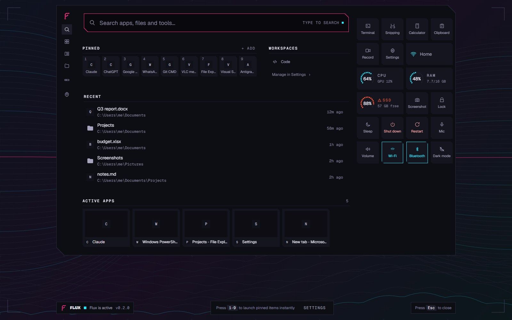
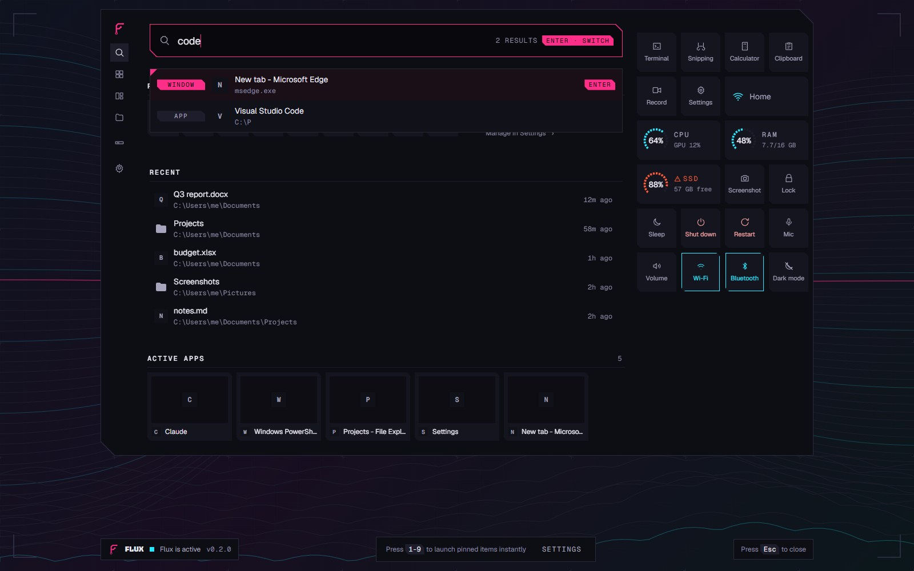
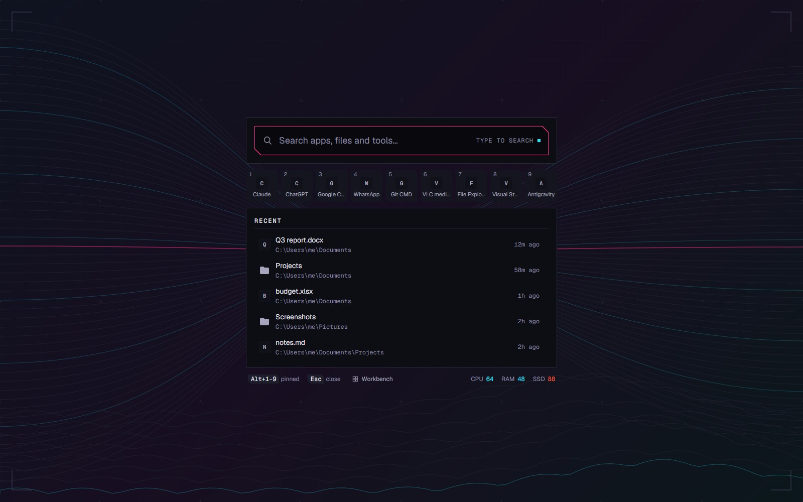
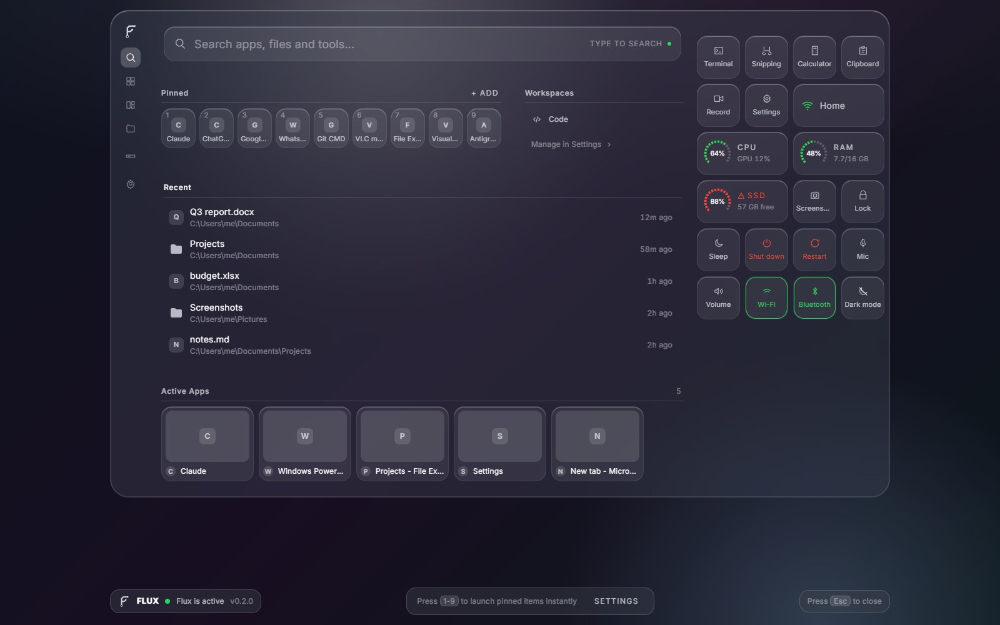

One
keystroke.
Whole
machine.
Ctrl+Space brings up one full-screen sheet: apps, open windows, files and every Settings page, with live CPU, RAM and disk readings beside the search. Press it again and it’s gone.
WINDOWS 11 · X64
What you see








One ranked pool
Everything you can open or change, matched as you type. At most eight rows, so the right one is always in reach.
Already open? It goes there
A window row focuses the window you have instead of starting a second copy. The switch is verified: Flux waits until that window is really in front, up to 450 ms, and tells you when Windows refuses.
The machine, beside the search
CPU, RAM and disk on the sheet every time you summon it. The colours mean the same thing in every theme.
SAMPLE READINGSEvery request it makes
No telemetry, no analytics, no account. Clipboard capture stays off until you answer the question in onboarding.
| Request | Who starts it |
|---|---|
| Update check | Flux. You can turn it off. |
| Web search | You, by pressing Enter on it |
| Open-Meteo forecast | You, by turning on weather and setting a place |
Search queries are never written to the logs, and the build fails if an HTTP client is linked into it. Settings › Privacy lists every store Flux writes, with its path and size.
No Windows key, ever
History, snippets, a desk
Clipboard history sealed with DPAPI on this PC: a 1 GiB budget and up to 10,000 items. Snippets expand where you type. Nine widget cards sit on the desktop, off until you want them.
SAMPLE READINGS